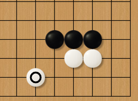
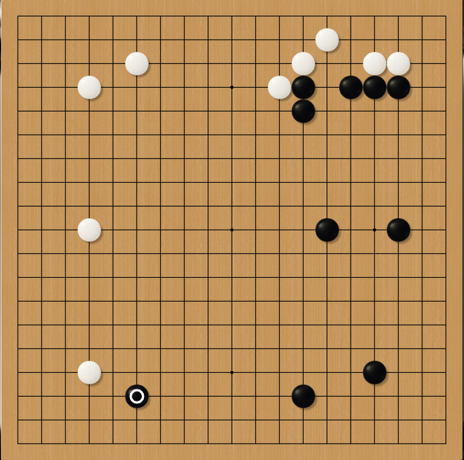

Introduction
This page will have a list of key terms and a corresponding definition.
Sente
Sente is a Japanese go term that roughly translates to 'initiative'. A 'sente move' is a move that your opponent has to respond to, so you can then switch elsewhere on the board if you want to. Having sente means that it is your move turn and there is nothing urgent on the board; in other words, that you are free to choose your next plan from many similarly good alternatives.
Gote
Gote is the opposite of sente. A 'gote move' finishes the play in a local area of the board, letting the opponent move elsewhere. Taking gote means choosing a plan or line of play that optimises your result locally but allows the opponent to freely choose their next plan.
Tseuji
Tesuji is a Japanese Go term that roughly translates to 'skillful move'. Tesuji is can be very difficult to find, however can alter the course of the game. Even a skilled player may take many minutes to find tesuji.
Joseki
Josekis are essentially well known Tseuji moves that are played in the early game. Some examples would be the 3-3 invasion, or the knight move on a 4-4 point.
Framework
Framework, also known as moyo is an area where one player has a large amount of potential to net them a large amount of points. However, a framework does not guarentee points, and the player must fight the opponent for it.
Both black and white have large frameworks.
Aji
Aji can be translated to 'taste' from Japanese. The aji in various positions on the board impacts the course of the game regardless of whether a player makes moves to realize the potential. A situation is said to contain bad aji when the presence of the opponent's stones or weaknesses in one's own position create a threat of compromising the position in the game.